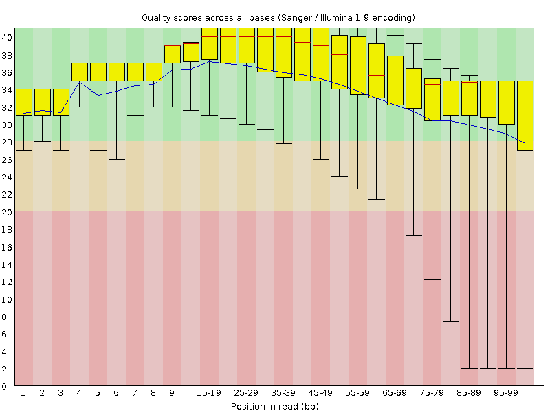
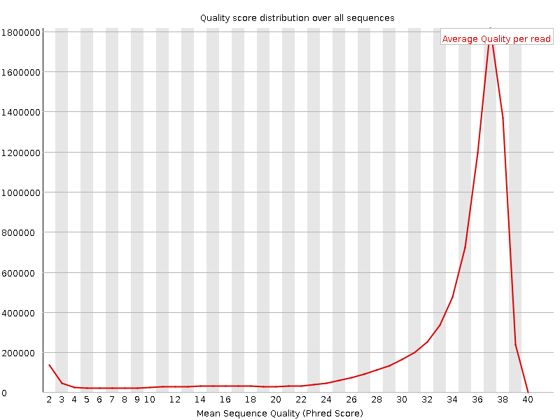
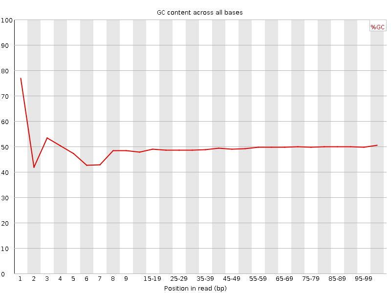
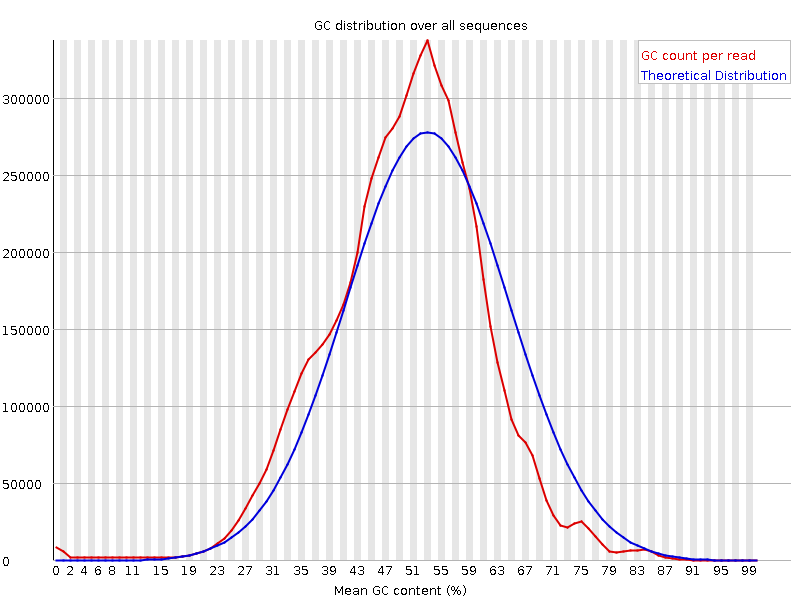
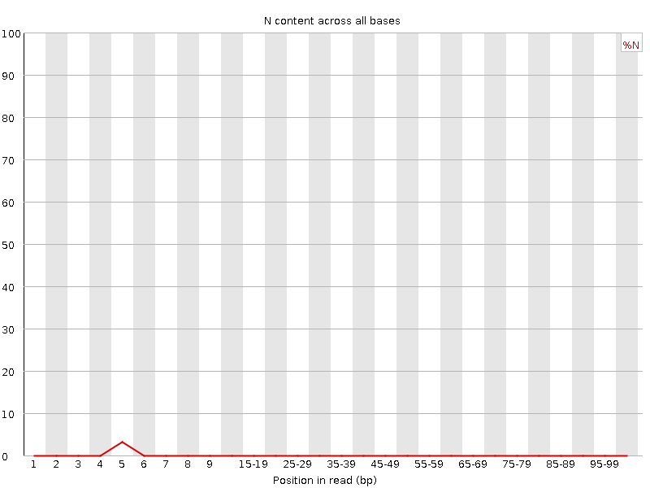
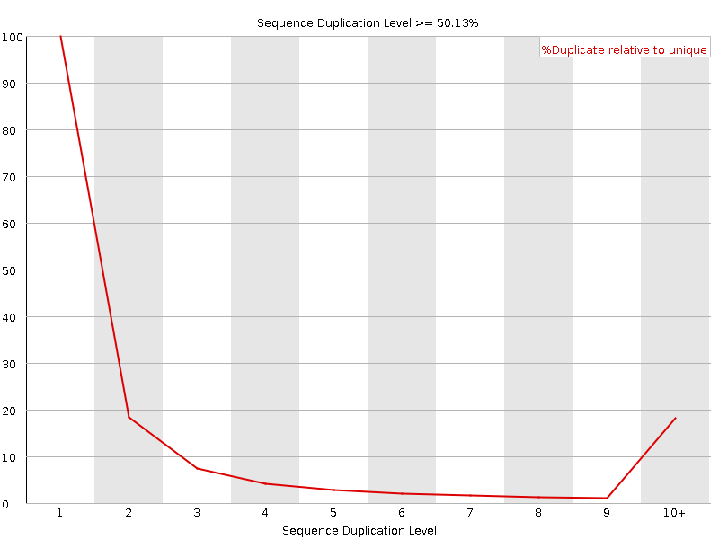
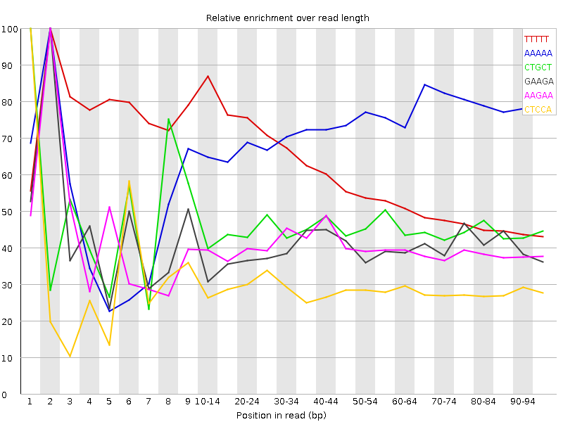

![[OK]](Icons/tick.png) Basic Statistics
Basic Statistics
| Measure | Value |
|---|---|
| Filename | F_parvapinis_NA_FW_3_R1.fastq.gz |
| File type | Conventional base calls |
| Encoding | Sanger / Illumina 1.9 |
| Total Sequences | 8074759 |
| Filtered Sequences | 0 |
| Sequence length | 100 |
| %GC | 49 |
Per base sequence quality

Per sequence quality scores

![[FAIL]](Icons/error.png) Per base sequence content
Per base sequence content

Per base GC content

![[WARN]](Icons/warning.png) Per sequence GC content
Per sequence GC content

Per base N content

Sequence Length Distribution

Sequence Duplication Levels

Overrepresented sequences
| Sequence | Count | Percentage | Possible Source |
|---|---|---|---|
| TTTTTTTTTTTTTTTTTTTTTTTTTTTTTTTTTTTTTTTTTTTTTTTTTT | 18207 | 0.22548041371884905 | No Hit |
| CTGCAAGTCATTTAGCACCACGTTCTCCACAAACATGCTGTGCGTAATCG | 14515 | 0.1797576868857634 | No Hit |
Kmer Content

| Sequence | Count | Obs/Exp Overall | Obs/Exp Max | Max Obs/Exp Position |
|---|---|---|---|---|
| TTTTT | 5884190 | 7.367166 | 12.3458605 | 2 |
| AAAAA | 3766405 | 4.828655 | 6.693058 | 2 |
| CTGCT | 1723680 | 2.2832627 | 5.0436153 | 1 |
| GAAGA | 1644540 | 2.189819 | 5.43708 | 2 |
| AAGAA | 1652460 | 2.1590486 | 5.360901 | 2 |
| CTCCA | 1614680 | 2.1332977 | 7.377659 | 1 |
| GAAAA | 1534815 | 2.0053375 | 5.3181434 | 2 |
| CTCCT | 1520475 | 1.9993426 | 7.2626004 | 1 |
| CTGGA | 1445455 | 1.9379933 | 6.785531 | 1 |
| CTCTG | 1436220 | 1.9024805 | 5.401575 | 1 |
| CTGCA | 1397645 | 1.8601724 | 6.3187785 | 1 |
| CTGAA | 1403960 | 1.8470135 | 6.307829 | 1 |
| CTTTT | 1451155 | 1.846824 | 6.290735 | 1 |
| CTTCA | 1391345 | 1.80843 | 5.424532 | 1 |
| GTTTT | 1362005 | 1.7461512 | 7.215647 | 1 |
| CTTTG | 1299720 | 1.6937565 | 5.5841036 | 1 |
| CTCAG | 1215995 | 1.6184084 | 5.87861 | 1 |
| GGAAA | 1202435 | 1.6011257 | 6.3013306 | 1 |
| CTGGG | 1037715 | 1.4179409 | 5.9018216 | 1 |
| CTCCC | 1031105 | 1.3781892 | 5.366879 | 1 |